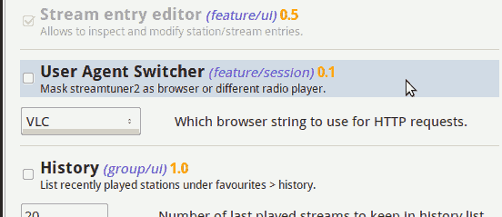

Configuration / Settings dialog
There are various options for streamtuner2, available under Edit ▸ Preferences or via F12.

It's grouped into:
- 🔊 Player
Associates media formats to audio player applications or recording tools.
- ☑ Options
Influences the display of all stream/station lists, and contains some behaviour and system settings.
- 📻 Channel Plugins
Allows to enable or disable channel tabs. Each can have specific options, which can be configured here.
- 🔌 Feature Plugins
Another class of plugins enables internal functions, or adds extra menu entries, or further configuration options.
- 📦 Add
The Plugin Manager 2 adds another tab for updating or installing new plugins.
Player application settings
MIME types are abstract identifiers for media types. Audio/mpeg for example represents MP3 files, and audio/ogg means OGG Vorbis. And the player setting dialog simply associates an audio type with a playback application:

Application names are most always lowercase binary names.
Double click an entry to edit it. After editing, the icon next to the application name will be updated. If it stays green, it's likely to work. If it turns red / into a stop symbol, then the entered name is likely incorrect. (Only works on U*ix-systems.)
-
After the application name, you can optionally use a placeholder:
%pls → default format
%m3u → older scheme
%xspf → modern playlists,
%srv → for direct streaming URLs
-
The format entries can specify generic or custom handlers:
Catch-all specifiers like */* or a generic audio/* entry allow to configure a default player.
While video/youtube is specific to the Youtube channel.
And url/http a pseudo MIME type to configure a web browser (for station homepages).
In practice you only needed one entry for audio/* and one for video/*, both can use the same player even.
You can remove existing entries by clearing both the Format field and its associated Application. Add completely new associations through the emtpy line.
Recording Apps
The second block of entries in the 'Apps' section specifies recording applications. Here streamripper is preconfigured for audio streams, and youtube-dl for Youtube videos for instance.
audio/* |
xterm -e streamripper %srv |
video/youtube |
xterm -e "youtube-dl %srv" |
To define a target directory, you can often add commandline arguments to each. Also it's typically helpful to leave the xterm prefix on, so you can follow the processing state.
Display/GUI options
Display settings
- ☑ Show bookmark star
Bookmarked stations will be marked with a ★ star in all other station lists / categories. That doesn't often work for the same station entry from two different channel services / tabs though.
- ☑ Save window states
Automatically remember window size, selected channel tab, categories, or selected station. Also keeps the width of station list columns. If disabled, you can manually save the current layout/selections via Edit ▸ Save States.
- ☑ Update window title
When switching channel tabs, the Streamtuner2 window title usually gets the current channel name appended (such as "- Shoutcast" or "- Xiph"). You can disable this if it looks confusing. (Requires a restart to fully take effect.)
- → Favicon plugin options
Station loading
- ☑ Prefer HTML traversing (PyQuery) over regex
Some channels provide proper APIs to fetch station lists. Others are just websites that require scraping listings out. Most channel tabs provide two alternative methods for that. The DOM/HTML selection method is sometimes slower, but more reliable. As fallback streamtuner2 plugins often use a regex to match text. Occassionally the regex method is surprisingly more exact, because directory services often use frightful unstructured HTML. If available, both methods are tried. You can influence the order with this setting, and thus speed it up.
- 🔟 Limit stream number
Constraints the length of station lists per category. The number of stations option is not honored by all channel plugins. Often it's not possible to load more or fewer station entries. Some plugins have own settings (in the 'Plugins' section) even. For the major plugins this however limits how many scrollable entries appear in the stream lists.
- ☑ Retain deleted stations
When enabled, keeps old station entries when updating/reloading a category/genre. Services often forget stations or throws them out when inavailable. With this option enabled, these entries are kept in streamtuner2 as strikethrough entries (often at the end of the list).
- ☑ Update favouries from freshened URLs
Streaming URLs in bookmarked stations get renewed on category reloads/updates. This isn't very reliable, as often station titles change together with the streaming URLs.
- ☑ Save station lists after updates
After reloading (F5) the updated station lists are autoamtically saved. For favicon updates or drag and drop events this only happens automatically when this option is set.
Playlist
- ☑ Reuse .m3u/.pls files
When converting online station playlists, streamtuner2 creates temporary files like shoutcast.11539398391891.m3u for your audio player. It'll keep those files around in /tmp/streamtuner2 until you quit. That speeds up switching between and reconnecting to a previous station. It's in particular necessary when you use â or ⪠directly in your player. For %pls references your player typically usues the online-only playlist files anyway. If you disable this option, then converted pls/m3u/xspf files get recreated repeatedly.
- ☑ Forgo any playlist conversion
-
Per default most server playlists (be they .pls or .m3u, .xpsf) are converted. All player/recording apps receive a default %pls file normally. Set this option to disable any such placeholders from the Player tab, and avoid streamtuner2 pre-downloading any m3u/pls/xspf. Instead your audio player gets passed the literal server/playlist streaming URL then.
Note that this is only a minor speedup, but may trip up some applications. A few channel sources don't even provide standard stream addresses and playlists. (Jamendo albums for example really need pre-conversion; no audio player can deal with such custom JSON playlists). In short: you don't normally want to enable this flag - unless you run into problems with streamtuner2 taking too long, or when it hang by accidentially downloading streams itself.
System
- 🔠Temporary files
Streamtuner2 creates temporary .m3u files - for audio players that are configured to use %m3u files instead of %pls or %srv URLs. For archival purposes you might want to set a dedicated directory for this. In recent versions streamtuner2 will create a /tmp/streamtuner2 directory for itself. (You cannot set just `/tmp` anymore, because that will be mapped to the longer name. You can trick the old behaviour with `/tmp/.` however. Don't do that unless you have a reason).
- 🔠Config directory
Is where streamtuner2 keeps its settings.json and channel caches, favicons, etc. You can't set this in the config dialog. This is just for display. Set the XDG_CONFIG_HOME environment variable to adapt.
- ☑ Enable debug messages
If you start streamtuner2 from a terminal window (xterm/rxvt), you can get a load of state and processing or debug infos. Enable this only for testing, as it might slow down station rendering.
- ☑ Disable threading
Now "threading" is a somewhat technical term. It means that an application runs different tasks internally at the same time. It's used for snappier interfaces. However, it's also difficult to get right at times. In Streamtuner2 some concurrent tasks conflict with updating the Gtk3 user interface. Which is why the application may crash even on reloading station lists or when switching between categories too quickly. This is only an issue for Python3 on Gtk3 with streamtuner2. In such cases you can disable the concurrent-tasking mode. The GUI will appear slower at times, and freeze between fetching lists, but remains stable on the upside. There's also a command line flag --nt to enable this workaround.
Channel and feature plugins and settings
The 📻 Channels tab shows all available directory services. |
While the 🔌 Features group provides internal or menu enhancements. |
Disabling or enabling a plugin however requires a restart of Streamtuner2 to take effect. (Unless the Plugin Manager 2 is enabled, with its 📦 Add tab visible.)

Each plugin can have its own little list of extra options. They'll be applied right away for already active channel/feature plugins.


If you want to find out more about the short option descriptions (most settings are checkboxes), please have a look into the channels directory /usr/share/streamtuner2/channels/ and corresponding *.py files. These are somewhat readable even to non-programmers, and sometimes contain more information.